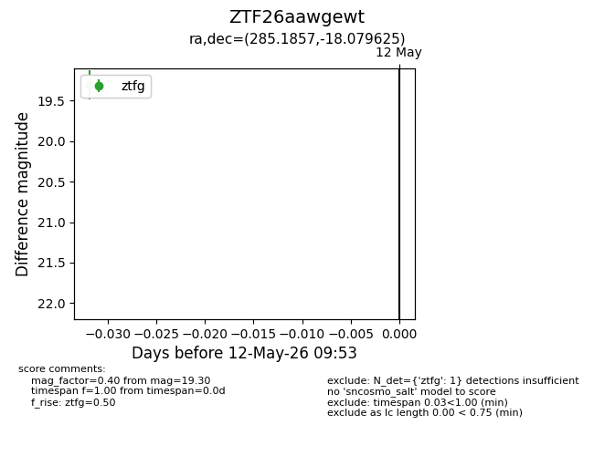
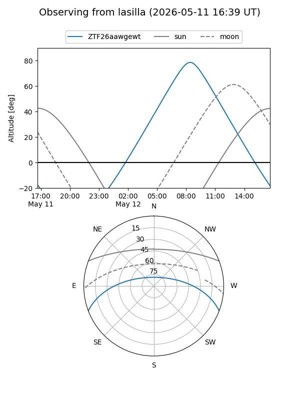
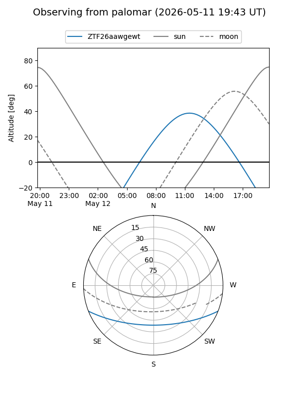

ZTF26aawgewt
Target ZTF26aawgewt at 2026-05-12 09:55
Aliases and brokers:
FINK: link
Lasair: link
ALeRCE: link
alt names
ZTF26aawgewt (ztf,fink_ztf)
Coordinates:
equatorial (ra, dec) = 285.1857,-18.07963
equatorial (HMS+DMS) = 19:00:44.57,-18:04:46.65
galactic (l, b) = (17.7018,-10.12809)
Flags:
Photometry:
last ztfg=19.30
1 ztfg detections
Lightcurve

Visibility


Additional plots